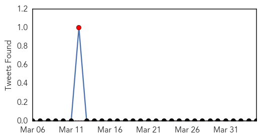

30 Day Trends
Web: 3 alerts, 0 warnings
Twitter: 1 alerts, 0 warnings
Top Articles:
- 0.899
- Three Gay Men Die from Meningitis Disease in Southern California
- 0.854
- Officials urge gay Californians to faccinate following 3 meningitis deaths
- 0.793
- Los Angeles urges vaccines after gay men die of meningitis
- 0.735
- Meningitis Cases in Los Angeles Show Higher Risk in Gay Men
- 0.714
- Meningitis deaths bring warning for gay men
- 0.712
- Children to receive Meningitis B vaccine
- 0.712
- 3 gay men die of meningitis; L.A. County recommends vaccinations
- 0.710
- Three Los Angeles County Men Die due to Invasive Meningococcal Disease
- 0.684
- 3 meningitis deaths reported in Los Angeles county
- 0.676
- Deadly L.A.-area meningitis cases raise concerns in gay community
- 0.619
- Three die of meningitis outbreak in Los Angeles area
- 0.548
- Los Angeles County health agency failed to report meningococcal deaths of 3 men
- 0.543
- Three meningitis deaths reported in Los Angeles County; health officials urged gay men to be vaccinated
- 0.538
- 3 Meningitis Deaths
Top Tweets:
-
No tweets found for Apr 04, 2014
Web/News Articles

Tweets
Article Locations